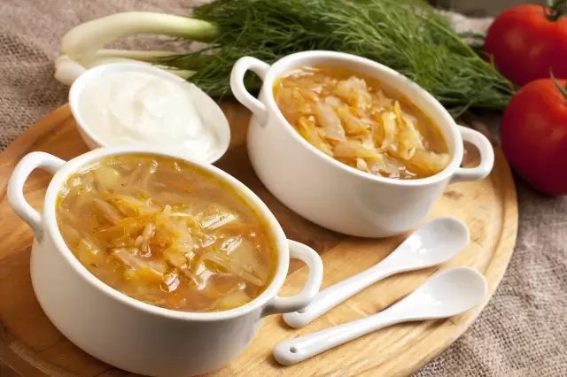

Recetas Top
Receta para una Sopa Juliana
Lista de ingredientes
1Kg de cebollas
1Kg de zanahorias
500gr de patatas
100gr de apio o puerro
3l de caldo de carne
150gr de mantequilla
1 cucharada de harina
1 pizca de sal
Tomillo y cominos
1 hoja de laurel
Pimienta
1 diente de ajo

Proceso de elaboración
Pelar y partir las verduras en juliana.
Rehogarlas con la mantequilla, sal y pimienta a fuego lento hasta que estén transparentes sin dorarse.
Añadir la harina sin dejar de remover.
Ponerlo en una cazuela con el caldo, el tomillo y el laurel.
Dejar cocer a fuego lento durante unos 25 minutos.
Dejar reposar y enfriar.